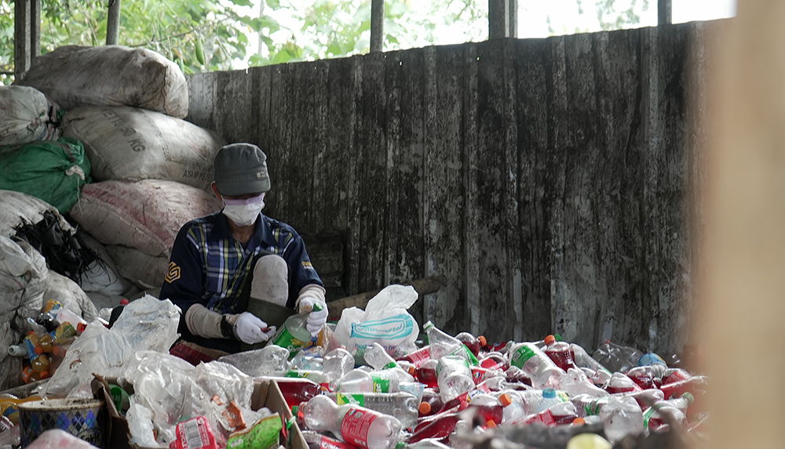

Selamat Datang di Website Resmi Bank Sampah SMP 9 Semarang

Bank Sampah adalah tempat belajar sekaligus bertindak untuk menjaga lingkungan. Di sini, siswa dan warga sekolah diajak memahami bahwa sampah bukan hanya limbah, tapi juga sumber daya yang bisa dimanfaatkan kembali.
Sampah yang tercampur akan sulit diolah. Dengan memilah antara organik dan anorganik, kita membantu proses daur ulang dan mengurangi pencemaran lingkungan.
Dengan edukasi yang tepat, kita bisa menciptakan generasi muda yang peduli lingkungan dan siap menjaga bumi untuk masa depan yang lebih hijau. Mari bergabung bersama Bank Sampah SMP 9 Semarang dan wujudkan sekolah hijau yang inspiratif!